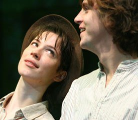
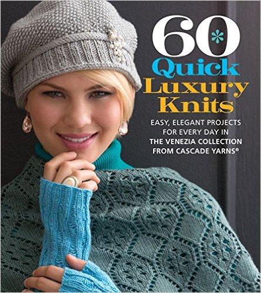

My name's Leila. I'm a recent college graduate, aspiring programmer, and amateur artist.
I'm 19 and a recent college graduate. I was homeschooled for the majority of my life, and got Bachelor's in Computer Science this year.
This blog has gone through a lot of phases. It started out as a blog about the 80% fictional “adventures” of my alter-ego Sheila. She was a paper doll. This is “Rosalind as Ganymede.”  It’s a Shakespeare reference I made when this was briefly a street fashion blog. I really liked menswear inspired fashion for a week several years ago, and now people just think my name’s Rosalind.
I've been knitting since I was nine years old. I found an old scarf my mom made and begged for knitting lessons that summer. The idea stuck, and three months turned into ten years. I've published a few patterns, one of which is included in the book "60 Quick Luxury Knits"
